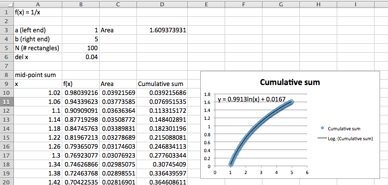

Section 7.2 The Fundamental Theorem of Calculus
¶Link to worksheets used in this section
In the last section we defined the definite integral, \(\int_a^b f(t)dt\text{,}\) the signed area under the curve \(y= f(t)\) from \(t=a\) to \(t=b\text{,}\) as the limit of the area found by approximating the region with thinner and thinner rectangles. We also saw that we can easily find a reasonable approximation to the area using Excel to find such a sum with a fairly large number of rectangles.
In the trivial case where we have a constant function \(f(t)=c\) we can find the area of the area with a simple formula, \(\int_a^bc dt=c(b-a)=cb-ca\text{.}\) If we define an area function, \(F(x)\text{,}\) as the area under the curve \(y=f(t)\) from \(t=0\) to \(t=x\text{,}\) then the area function in this case is \(F(x)=c*x\text{.}\) We would like to be able to evaluate more integrals with a process like this, where we have a simple area function.
Remark 7.2.1. Note on variables used.
We shifted the independent variable from \(t\) for the function \(f\) to \(x\) for the function \(F\) because we have two independent variables in our discussion and we want to keep them separate to avoid confusion. We will consider \(f\) as a function of \(t\text{,}\) and want to find the area under the graph of \(f(t)\text{.}\) We will consider \(F\) as a function of \(x\text{,}\) and understand it as the area under the curve \(y=f(t)\) from some starting point \(t=a\) to \(t=x\text{.}\)
We start by exploring cases where we can justify an area function without using calculus. We will then look at some cases where we can experimentally verify the area function with Excel. Finally we will give the general rule for the area function, the Fundamental Theorem of Calculus, and will give some justification.
Example 7.2.2. Area function for constant by geometry.
Let \(f(t)=c\text{.}\) For a constant function, \(f(t)=c\text{,}\) the area under the curve will be the area of a rectangle of height \(c\) and width \(b-a\text{.}\) The obvious area function is \(F(x)=c*x\text{.}\) Then
It is worth noting that this formula gives "signed area." If c or b-a is negative, the "area" is negative.

Example 7.2.3. Area function for linear function by geometry.
Let \(f(t) = c*t\text{.}\) For a linear function, \(f(t) = c*t\text{,}\) the area under the curve from 0 to \(b\) will be the area of a triangle of height \(c*b\) and width \(b\text{.}\)

The obvious area function is \(F(x)=c*x^2/2\text{.}\) If \(a\) is also nonzero, the area is the difference of the areas of two triangles.
Remark 7.2.4. A note on versions of Riemann sum used.
As we consider finding area with Excel and Riemann sums, rather than use a right-hand rule for the rectangles, we are going to use a midpoint rule where we find the area of rectangles evaluated at the middle of each interval.

The right-hand rule uses an easier formula, so we used it first. For the ith rectangle we evaluate at \(x_i=a+i\Delta x\text{.}\) For the midpoint formula, we evaluate at the midpoint of the interval, at \(mid_i=a+i\Delta x-\Delta x/2\text{.}\) As the picture suggests, the midpoint formula gives a better approximation. The right-hand rule always overestimates an increasing function. The midpoint rule is exact for linear functions where the midpoint is the average value.
In both of the examples we have examined the area function has the original function as its derivative. We would like to use Excel to test a few more cases. In the worksheets we set up in the last section, SumArea is the area function we are looking for. We will plot the area function and use a best-fit curve to find the equation of the area function.
Example 7.2.5. Best fitting area function for a linear function.
Repeat the last example, finding the area under \(f(x)=6x\text{,}\) with Excel. With a linear function we have use the following to produce an area function.

Column C has our list of \(t\) values in the center of each interval. Column D has the value of \(f(t)\) evaluated at those points. The area of the rectangle is the height \(f(mid_n)\) times the width, Interval width. SumArea is our running area function. When we plot the area function we have something that seems to be quadratic with leading coefficient \(c/2\) and very small linear and constant coefficients. In fact the linear and constant coefficients are zero up to a rounding factor for numbers of the size we are using.

This matches the result we had solving the problem with geometry. However, we can repeat the process with Excel and use functions of higher order.
Example 7.2.6. Best fitting area function for a quadratic function.
Find the area function when \(f(t) = 6t^2\text{.}\)
For this problem we essentially repeat the work of the previous example with a quadratic function for \(f(t)\text{.}\)

When we plot the area function we get a very good fit with a cubic function. Once again, allowing for the way best-fit curves may return small random values for coefficients that should be zero, we see that if \(f(t) =c*t^2\text{,}\) then the related area function is

Example 7.2.7. Best fitting area function for a cubic function.
Find the area when \(f(x)=6 x^3\text{.}\)
Once again, we can use Excel to produce an area function. The area function seems to be \(F(x)=1.5 x^4\text{.}\)
In all the examples above we note that the area function, \(F(x)\text{,}\) has \(f(x)\text{,}\) the curve we are finding the area under, as its derivative. Thus, in these cases, the area is an anti-derivative of \(f(x)\text{.}\) This observation generalizes to the Fundamental Theorem of Calculus, which has two versions:
Theorem 7.2.8. Fundamental Theorem of Calculus (first version).
Let \(f(x)\) be a continuous function on the interval \([a, b]\text{.}\) On that interval define an area function by \(F(x)=\int_a^x f(t) dt\text{.}\) Then \(\frac{d}{dx} F(x)=f(x)\text{.}\)
Theorem 7.2.9. Fundamental Theorem of Calculus (second version).
Let \(f(x)\) be a continuous function on the interval \([a, b]\text{.}\) Suppose \(F(x)\) is any continuous, differentiable function with \(\frac{d}{dx} F(x)=f(x)\text{.}\) Then \(\int_a^b f(t) dt=F(b)-F(a)\text{.}\)
In practice we use the second version of the fundamental theorem to evaluate definite integrals. We find a function \(F(x)\) whose derivative is the integrand \(f(x)\) and then evaluate \(F(x)\) at the endpoints. It is easier to prove or justify the first version of the fundamental theorem. The basic argument notes that is \(F(x)=\int_a^xf(t) \ dt\text{,}\) then formally
But if \(h\) is small, \(F(x+h)-F(x)\) is approximately the area of a rectangle of height \(f(x)\) and with \(h\text{,}\) so the \(F'(x) = f(x)\text{.}\) We then note that any two anti-derivatives of a function differ by a constant.
Example 7.2.10. Redoing an old area problem by the FTC.
In example 7.1.2 in the previous section, we used Riemann sums with 100 and 1000 intervals to approximate the area under \(y = x*(4-x)\) with \(x\) between 0 and 4. Find the area using the fundamental theorem of calculus,
We rewrite the curve as \(f(x) = 4x – x^2\) and note that one anti-derivative of \(f(x)\) is \(F(x) = 2 x^2 - x^3/3\text{.}\) Then
To get the same answer to 4 decimal places, we needed to use 1000 intervals with Riemann sums. Clearly, it is easier to solve this problem with the fundamental theorem of calculus than to make an approximation with that many intervals.
Example 7.2.11. Verifying an antiderivative to find area.
Let \(f(x)=x^2 e^{-x}\text{.}\) We are told \(F(x)=(x^2+2 x+2) (-e^{-x})\) is an anti-derivative of \(f(x)\text{.}\) Verify the anti-derivative and find the area under the curve with \(x\) between 0 and 2.
Using the product rule,
The area is
We also want to revisit our first three examples in light of the fundamental theorem if calculus. In all of those examples we used Excel to find a best fitting curve for an area function. We can now check our work by taking the derivative, adjusting parameters as needed to find an anti-derivative. For constant and linear functions we have already done the adjusting because we could find the area function from geometry.
Example 7.2.12. Using the FTC to guess and check area under a quadratic.
Example 3a: Find the area function when \(f(t) = 6t^2\text{.}\)
We have already used Excel to find a best fitting curve.

We are thus suspicious that the anti-derivative should be a cubic polynomial. We need
Setting coefficients equal for each power, we see \(a = 2\) and \(b = c = 0\text{.}\) Thus our area function has the form \(F(t) = 2 t^3 + d\text{.}\) Since \(F(0)\) is the area of a region between \(t = 0\) and \(t = 0\text{,}\) we conclude \(d = 0\) and our area function is \(F(t) = 2 t^3\text{.}\)
Example 7.2.13. Verifying the best fitting function for area under a cubic function.
Find the area when \(f(x) = 6 x^3\text{.}\)
Using Excel we guessed the area function \(F(x) = 1.5 x^4\text{.}\) We can now verify that the derivative of \(F(x)\) is \(f(x)\text{,}\) so we have found an anti-derivative.
It is worth noting that using the fundamental theorem to evaluate integrals requires us to be able to find an anti-derivative of a function. Finding an anti-derivative may be quite hard or even an impossible task. The method we have just used is often referred to as the “guess and check” method of finding anti-derivatives. We will look at methods of finding anti-derivatives in the next several sections.
Exercises Exercises: The Fundamental Theorem of Calculus Problems
¶1.
Let \(f(x) = 4 x + 5\text{.}\) We are told that \(F(x) = 2 x^2 + 5 x + 7\) is an anti-derivative.
Verify that \(f(x)\) is a derivative of \(F(x)\text{.}\)
Use the fundamental theorem of calculus to evaluate \(\int_1^5 f(x)\ dx\text{.}\)
Approximate \(\int_1^5 f(x)\ dx\text{,}\) using Riemann sums and 100 intervals.
- \begin{equation*} F' (x)=\frac{d}{dx} (2 x^2+ 5 x + 7)=4x+5 \end{equation*}
- \begin{equation*} \int_1^5 f(x) dx=F(5)-F(1)= 82-14=68 \end{equation*}
-
The midpoint sum gives us an approximation of 68.

2.
Let \(f(x) = 6 x^2 + 3\text{.}\) We are told that \(F(x) = 2 x^3 + 3 x - 2\) is an anti-derivative.
Verify that \(f(x)\) is a derivative of \(F(x)\text{.}\)
Use the fundamental theorem of calculus to evaluate \(\int_{-2}^4 f(x)\ dx\text{.}\)
Approximate \(\int_{-2}^4 f(x)\ dx\text{,}\) using Riemann sums and 100 intervals.
3.
Let \(f(x) = 5/x\text{.}\) We are told that \(F(x) = \ln(x^5) + 9\) is an anti-derivative.
Verify that \(f(x)\) is a derivative of \(F(x)\text{.}\)
Use the fundamental theorem of calculus to evaluate \(\int_1^{20} f(x)\ dx\text{.}\)
Approximate \(\int_1^{20} f(x)\ dx\text{,}\) using Riemann sums and 200 intervals.
-
\begin{equation*} F' (x)=\frac{d}{dx} [\ln(x^5 )+ 9]=\frac{1}{x^5} (5x^4 )+ 0=\frac{5}{x} \end{equation*}
or
\begin{equation*} F' (x)=\frac{d}{dx} [\ln(x^5 )+ 9]=\frac{d}{dx} [5\ln(x)+ 9]=5\frac{1}{x}+ 0=\frac{5}{x} \end{equation*} - \begin{equation*} \int_1^{20}\frac{5}{x} dx=F(20)-F(1)=\ln(20^5 )+9-(\ln(1)+9)=ln(20^5) =14.98 \end{equation*}
-
The midpoint sum with N = 200 gives an approximation of 14.978

4.
Let \(f(x) = (2 x +3)^4\text{.}\) We are told that \(F(x) = 0.1 (2 x + 3)^5\) is an anti-derivative.
Verify that \(f(x)\) is a derivative of \(F(x)\text{.}\)
Use the fundamental theorem of calculus to evaluate \(\int_{-1}^1 f(x)\ dx\text{.}\)
Approximate \(\int_{-1}^1 f(x)\ dx,\) using Riemann sums and 100 intervals.
5.
Let \(f(x) = x exp(-0.05 x)\text{.}\) We are told that \(F(x) = -20 (x+20) \exp(-0.05x)+3\) is an anti-derivative.
Verify that \(f(x)\) is a derivative of \(F(x)\text{.}\)
Use the fundamental theorem of calculus to evaluate \(\int_0^{10} f(x)\ dx\text{.}\)
Approximate \(\int_0^{10} f(x)\ dx\text{,}\) using Riemann sums and 100 intervals.
-
\begin{equation*} F'(x)=\frac{d}{dx} [-20(x+20) e^{-0.05x}+3] \end{equation*}\begin{equation*} =-20 [(1) e^{-0.05x}+(x+20) e^{-0.05x} (-0.05)] \end{equation*}\begin{equation*} = [(-20) e^{-0.05x}+(x+20) e^{-0.05x}] \end{equation*}\begin{equation*} =e^{-0.05x} [(-20)+(x+20)] \end{equation*}\begin{equation*} =e^{-0.05x} x \end{equation*}
- \begin{equation*} \int_0^{10}x e^{-0.05 x} dx=F(10)-F(0)=-360.92-(-397)=36.08> \end{equation*}
-
The midpoint sum with N = 100 gives an approximation of 38.06

6.
Explain why, if \(F(x)\) is an anti-derivative of \(f(x)\text{,}\) then \(F(x) + 7\) is also an anti-derivative of \(f(x)\text{.}\)
7.
Using an area function from Riemann sums and best fitting curves we have guessed that a quadratic function will have a cubic anti-derivative.
Find an anti-derivative of \(f(x)=-x^2+6x-2\)
-
Use the fundamental theorem of calculus to evaluate
- \(\int_0^3 f(x)\ dx\)
- \(\int_{-2}^4 (x)\ dx\)
.
-
The anti-derivative should be a cubic, so something of the form
\begin{equation*} F(x)=ax^3+bx^2+cx+d \end{equation*}And the derivative should be \(f(x)= -x^2+6x-2\text{.}\)
We can ''guess and check'': \(F(x)=-1/3 x^3+3x^2-2x+0\) and sure enough, the derivative is \(f(x)\text{.}\)
If you are not comforsidebyside with that method note that
\begin{equation*} F' (x)=3ax^2+2bx+c \end{equation*}So \(3a= -1\text{,}\)\(2b=6\text{,}\) and \(c=-2\text{.}\)
Hence \(a= -1/3\text{,}\) \(b=3\text{,}\) and \(c=-2\text{.}\)
There are no conditions on \(d\text{,}\) so that coefficient can be anything. We picked 0 to keep things simple. But then
\begin{equation*} F(x)=ax^3+bx^2+cx+d=-1/3 x^3+3x^2-2x \end{equation*} -
Use the fundamental theorem of calculus to evaluate
- \begin{equation*} \int_0^3 f(x)\ dx=F(3)-F(0)=(-9+27-6)-(0)= 12 \end{equation*}
-
\begin{equation*} \int_{-2}^4 (x)\ dx=F(4)-F(-2) \end{equation*}\begin{equation*} =(-64/3+48-8)-(8/3+12+4)= -24+40-16=0 \end{equation*}
.
8.
Using an area function from Riemann sums and best fitting curves we have guessed that a cubic function will have a fourth degree anti-derivative.
Find an anti-derivative of \(f(x)=x^3+9x^2+7x-3\text{.}\)
Use the fundamental theorem of calculus to evaluate \(\int_1^5 f(x)\ dx\text{.}\)
9.
I am interested in finding an anti-derivative for \(f(x)=e^{2x}\text{.}\)
Using Excel and 100 subintervals of \(0 \le x \le 2\text{,}\) compute an approximate area function for \(f(x)\text{.}\) Find a best fitting curve that fits the data well. (It may help to use a secondary axis for the area data.)
Based on your best fitting curve, use guess and check to find the anti-derivative.
-
A quick computation gives the total area:

The area under the curve is approx. 26.8.
The area under the curve looks like an exponential curve.
A curve fitting using the Trendlines gives us that
\begin{equation*} F(x)= 0.1618 e^2.739x \end{equation*}Note that this is not a very good approximation. The curve does not follow the data very well on the right hand side of the graph.
-
Based on the curve we would say that the anti-derivative should be an exponential function. The derivative of \(e^{2x}\) is \(2e^{2x}\text{,}\) so it seems reasonable to start with the anti-derivative being \(F(x)=A e^{2x}+B\text{.}\)
Then the derivative has to be \(f(x)\text{.}\)
\begin{equation*} F' (x)=A e^2x (2)+0=2A e^2x+0=e^2x \end{equation*}Hence A=0.5 and we may choose B to be any constant we want. Then
\begin{equation*} F(x)=1/2 e^2x+B \end{equation*}That shows us where the problem is in our estimate. Excel’s best fitting routine does not allow for constants in exponential functions. Since \(F(0)=.5+B\text{,}\) and \(Area(0)=0\text{,}\) we need to add .5 to the area to get a good best fit curve. Then the best fit line works.

10.
I am interested in finding an anti-derivative for \(f(x)=e^{-5x}\text{.}\)
Using Excel and 100 subintervals of \(0 \le x \le 2\text{,}\) compute an approximate area function for \(f(x)\text{.}\) Find a best fitting curve that fits the data well. (It may help to use a secondary axis for the area data.)
Based on your best fitting curve, use guess and check to find the anti-derivative.
11.
I am interested in finding an anti-derivative for \(f(x)=1/x\text{.}\)
Using Excel and 100 subintervals of \(1 \le x \le 5\text{,}\) compute an approximate area function for \(f(x)\text{.}\) Find a best fitting curve that fits the data well. (It may help to use a secondary axis for the area data.)
Based on your best fitting curve, use guess and check to find the anti-derivative.
-

The cumulative function looks like a logarithmic function.
The Trendline approximation gives the equation \(y = 0.9913ln(x) + 0.0167\text{.}\)
We can make the fit better when we realize that we are evaluating at the midpoint of each interval but taking the are to the end of the interval. We want to look at an adjusted x at the right side of each interval.

Rounding off the coefficients, we would have that
\begin{equation*} F(x) = ln(x) \end{equation*} -
We would say that the anti-derivative is \(F(x)=\ln(x)+constant\text{.}\)
And we have seen before that
\begin{equation*} F'(x)=\frac{d}{dx} \ln(x)+\frac{d}{dx} constant=\frac{1}{x} \end{equation*}